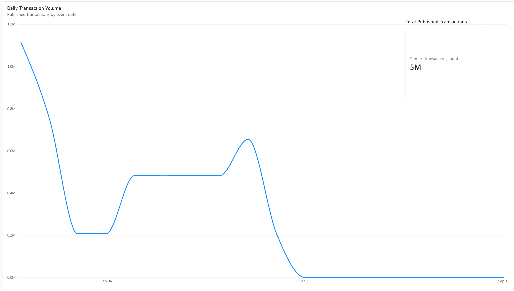
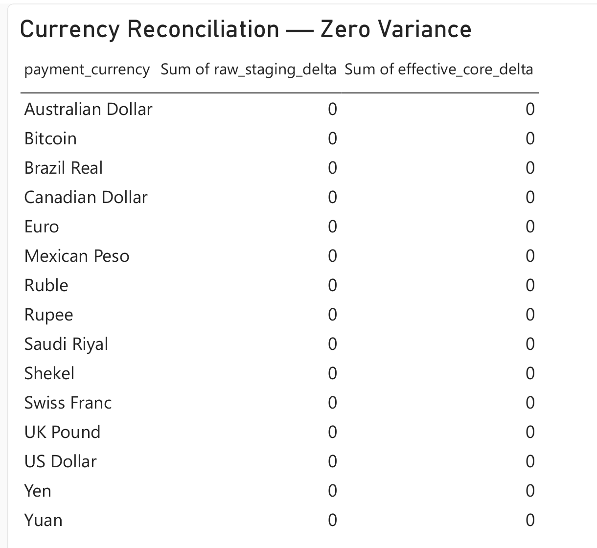
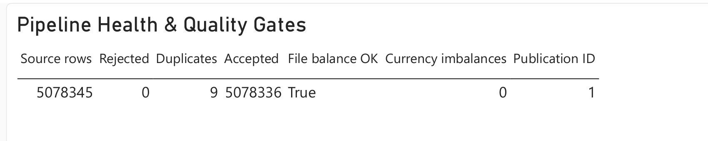
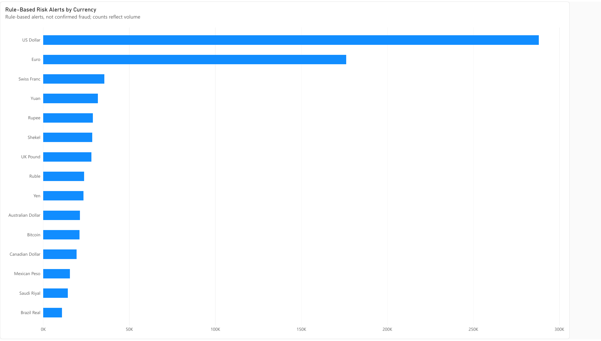

Project report · Data engineering
Banking Transaction
Data Platform
From simulated payments to checked, reliable reporting.
Technologies Python · PostgreSQL · dbt · Dagster · Power BI
Project overview
I built a batch data pipeline to check and organise 5.08 million simulated payment records before publishing reconciled analytics in PostgreSQL for Power BI reporting. The goal was traceability: account for every accepted record and reconcile source and published payment totals separately for each of the 15 currencies.
Each record describes a payment between accounts, including the banks, timestamp, amounts, currencies, and payment method. I used IBM’s synthetic AML data, which contains generated transactions rather than real customer records.
How I built it
- Collect and preserve the data. Load the source transactions with Python, retain the originals, and flag records that need checking.
- Validate and reconcile. Organise the data in PostgreSQL and validate record counts and payment totals before publication.
- Publish and verify. Coordinate the workflow with Dagster and independently check the published database with dbt.
Engineering decisions
SHA-256 file hashes prevent repeat ingestion of completed files. Ingestion-ID watermarks capture late-arriving records regardless of their payment date, and explicit correction events preserve the original source history. Analytics refresh, reconciliation, quality gates, and publication-marker updates run in one database transaction; a failed gate leaves the previous publication intact.
The published database passed 24 independent dbt checks, including record-count reconciliation, payment-amount reconciliation within each currency, transaction coverage in risk analytics, and consistency between published daily totals and risk-evaluation views.
Results
The full run published 5,078,336 accepted records and quarantined nine exact-payload duplicate candidates. All 15 currency groups reconciled without imbalance. Separate tests cover malformed inputs, reruns, late arrivals, corrections, and publication rollback.
The source provides no durable transaction ID, so identical payments remain candidates rather than confirmed duplicates. They are preserved for inspection in raw storage and quarantine, and excluded from the published transaction fact.
| Measure | Result |
|---|---|
| Source rows | 5,078,345 |
| Accepted and published rows | 5,078,336 |
| Duplicate candidates excluded from publication | 9 |
| Invalid rejects in this run | 0 |
| Imbalanced currency groups | 0 of 15 |


Figure 1. Transaction activity
Daily published payment volumes across the reporting period. Select the figure to enlarge it.
Supporting evidence: reconciliation, pipeline checks, and risk monitoring


Figure 2. Currency reconciliation
Source and published amounts match for every currency.


Figure 3. Pipeline checks
Row counts and validation results from the full run.


Figure 4. Rule-based risk monitoring
Transparent rules flag payments for review. These alerts are not confirmed fraud.
Data & limitations
The batch implementation has not been validated in a production banking system. The Power BI report uses a static Excel import from a verified PostgreSQL publication; it is not live-connected or refreshed automatically.
Takeaway & next step. Reliable reporting depends on being able to rerun a load safely and reconcile the result, not just complete the first successful import. Next, I would extend failure-and-recovery testing across more source variations before adding an automated Power BI refresh.
Technical evidence: architecture · dbt checks · test cases